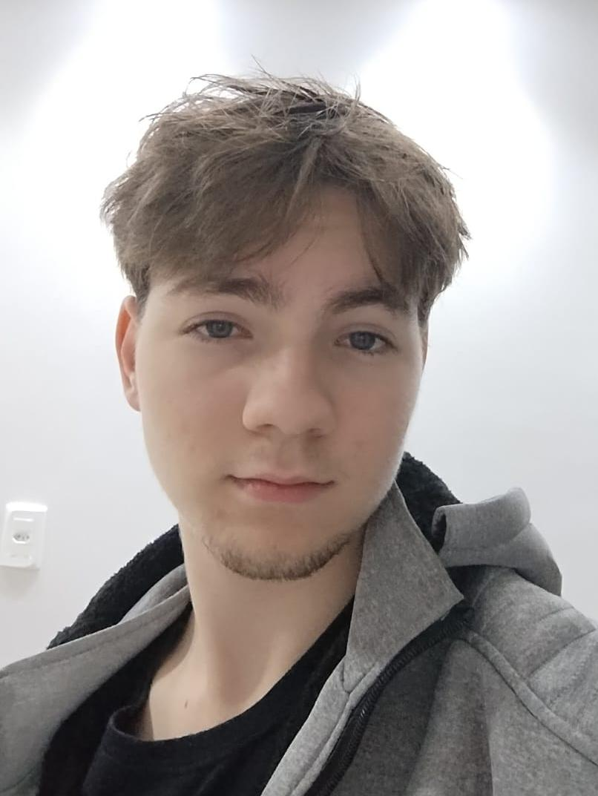

Olá, meu nome é Eduardo Frantz e nessa página te mostro um pouco mais sobre mim.
Esse logo aqui embaixo sou eu:
Esse logo aqui embaixo sou eu:

Eu comecei estudando em uma escola particular desde pequeno, eu sempre fui um pouco introvertido, pois nunca soube o que falar quando era a hora (até hoje não sei)
nela fiz vários amigos valiosos, e apesar de não levar muito o conhecimento que tentaram me ensinar lá, eu sinto que aprendi bastante.
Ainda quando eu era pequeno, praticava curso de inglês porque meus pais queriam que eu fizesse, antes de ir pro curso eu ficava na loja do meu pai,
que era uma lojinha de informática, desde lá tinha um leve interesse pelo ramo da tecnologia, também fui introduzido a computadores cedo por isso.
Até o fim do ensino fundamental, fiquei naquela mesma escola. Depois disso fui para uma escola pública e foi uma grande experiência pra mim,
era como se uma muralha que sempre existisse ali e eu nunca tivesse visto, tivesse derrepente desabado.
Lá eu conheci muitas outras pessoas e amigos, assim como também aprendi muitas coisas valiosas para a vida, não
explicitamente teoria sobre matérias, mas sim lições que eu pudesse olhar pra trás e utilizar como base para o futuro.
No fim disso decidi percorrer a àrea da programação porque me parecia legal e diferente, então fui atrás de uma universidade e
segui o conselho da minha família de fazer pela UPF (Universidade de Passo Fundo).
Então tive de fazer a decisão entre os cursos que queria, no final acabei escolhendo Análise e Desenvolvimento de Sistemas
pelo menor tempo de curso e pelo valor bem menor comparado ao de Ciência da Computação, porém, não me arrependo da decisão,
acho que ADS se encaixa muito melhor comigo do que Ciência da Computação, apesar de ser um pouco mais puxado
Nesse meio tempo em que estava estudando, eu também estava trabalhando, fiz dos meus 16 até os 18 anos o curso de Montador Multifuncional de
Máquinas Agrícolas pelo SENAI e durante esse tempo, recebi um chamado para uma entrevista da
Jan Implementos Agrícolas S/A e entrei como estágiario logo antes dos 17 anos.
Fiquei como estagiário desde metade de 2024 até agosto de 2025 quando já tinha 18 anos e fui contratado, desde então trabalho lá manhã e tarde, e durante noite estudo na UPF
Além de tudo isso tenho meus próprios hobbies, interesses e gostos, como quando eu jogava vôlei em torneios com
meus amigos, jogar jogos e testá-los, assistir algum desenho, filme ou série, passar tempo com minha namorada, curtir com minha família,
escutar música, comer refeições deliciosas (sou bom de garfo) e várias outras coisas.
Inclusive, um site legal é o Flexbox Froggy